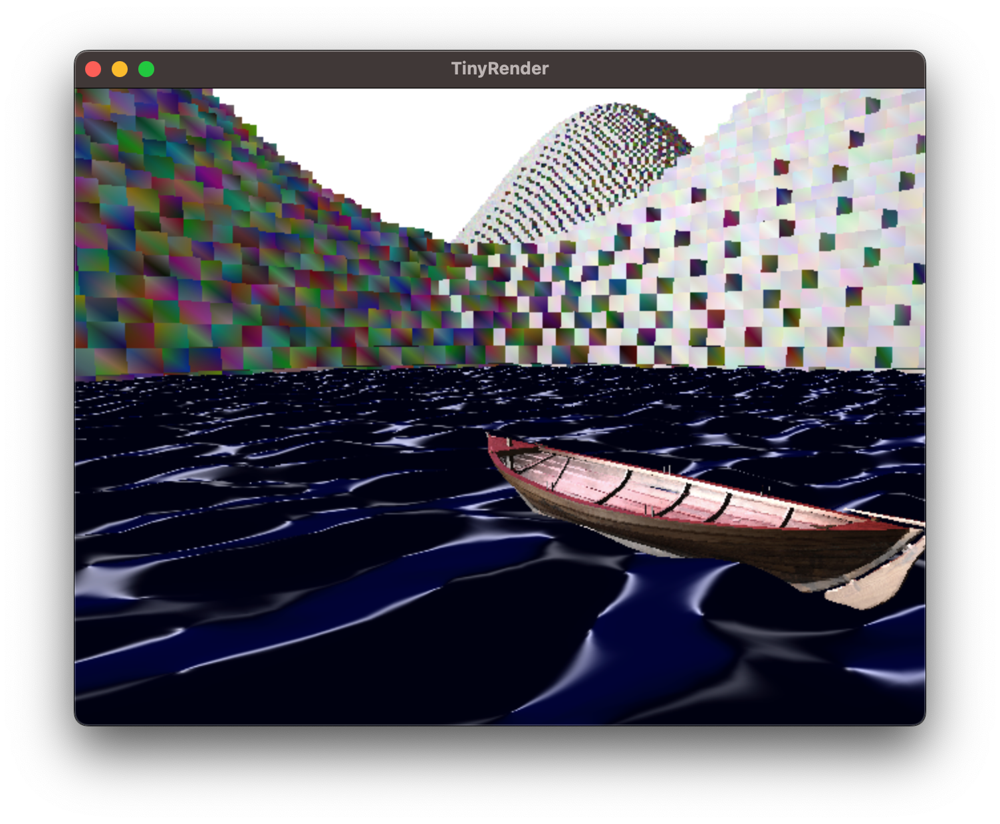

Home
A minimalist graphics engine written in C++17. Supports geometric shapes, OBJ files, basic lighting as well as specific support for voxels and wave simulation.
Tinyrender targets WebGPU and supports Desktop (MacOS/Windows/Linux) as well as the browser through WASM.
